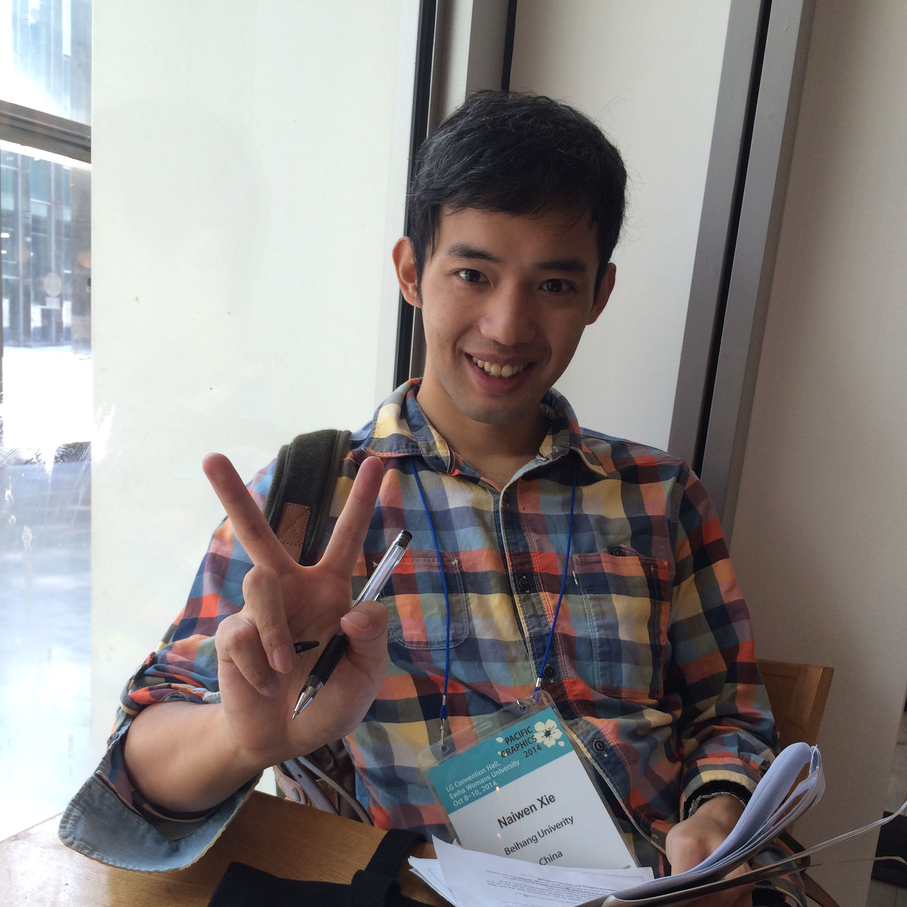

Naiwen Xie （谢乃闻）

I received my Ph.D. degree from Beihang University in 2017 and B.E. degree in Computer Science from Huazhong University of Science and Technology in 2011. My research interests include global illumination, image-based rendering, and image processing. I am currently working as a Senior Game Developer at Netease Games.
Email
sienaiwun@gmail.com
Organization
Netease Games
Address
NetEase Guangzhou Base Add.
NetEase Building, Guangzhou Information Port, No. 16 Ke Yun Road, Tianhe District, Guangzhou.
510665, P. R. China
Education
- From Sept. 2011 to now, Ph.D. student in School of Computer Science and Engineering at Beihang University.
- From Sept. 2015 to Sept.2016, Visiting Scholar at K.U Leuven.
- From Sept. 2007 to Jul. 2011, Undergraduate student in School of Computer Science and Technology at Huazhong University of Science and Technology.
- Average grade points: top 10% (about 530 students)
- Recmmended for admission to the Ph.D. program without exams
Publications
Journals
- Naiwen Xie, Lili Wang, Philip Dutré. Reflection Reprojection using Temporal Coherence. 2017, The Visual Computer, accepted.
PDF
- Naiwen Xie, Lili Wang, Voicu Popescu. Non-Redundant Rendering for Efficient Multi-View Scene Discretization. 2016, The Visual Computer, accepted.
PDF
- Lili Wang, Naiwen Xie, Wei Ke, Voicu Popescu. Second-Order Feed-Forward Rendering for Specular and Gloss Reflections. 2014, IEEE Transactions on Visualization and Computer Graphics (TVCG), accepted.
PDF PPT
Conference
- 彭通, 王莉莉, 谢乃闻, 赵沁平. 基于方向光辐射度的微结构表面全局光照绘制.Global Illumination of meso-structure surfaces based on Directional Light
Radiosity. CAD/CG2014, 2014, accepted. (in Chinese)
PDF
Thesis
- 复杂场景近似表达及绘制方法研究. Researches on Approximate Expressions for Complex Scenes and Rendering. (in Chinese)
PDF
PPT
Awards and Activities
Awards
- National Scholarship form Ministry of Education of The People's Republic of China, 2014
- Beihang Innovation Funding for Ph.d form Graduate School of Beihang Uniersity, 2015
- President Scholarship form Beihang University, 2015
- China Scholarship Council Funding form Ministry of Education of The People's Republic of China, 2016
Activities
- Attended PG and made an oral presentation, Seoul, Oct. 2014. PPT
- Attended SIGGRAPH Asia, ShenZhen, Dec. 2014.
- Attended EGSR and made an oral presentation, Darmstadt, June. 2015. PPT
- Attended EGSR, Dublin, June. 2016.
- Attended SIGGRAPH Asia, Macau, Dec. 2016.
Professional Skills
Programming
- Writing readable code in
C/C++, Matlab, Python with daily practical experiences.
- Expert in computer graphics with a deep understanding of graphical rendering pipeline, implemented many fantastic graphics programs using
OpenGL and GLSL.
- Familiar with parallel computing and skillful at using
CUDA to achieve parallel programs on GPUs.
- Data visualiztion and GUI design.
Algorithm design, analysis and implementation
- Experinced with implementing algorithms based on reseach papers.
- Algorithm evaluation and analysis.
Tools & Environment
- Editor/IDE:
Visual Studio, Eclipse, Qt Creator, gDEBugger, Notepad++, LaTex, etc.
- Operating systems:
Windows, Linux.
- Modelling tools:
Blender, 3ds Max, Amira, ZBrush, MeshLab, etc.
- Others:
Photoshop, Premiere, Office, Source Tree, etc.